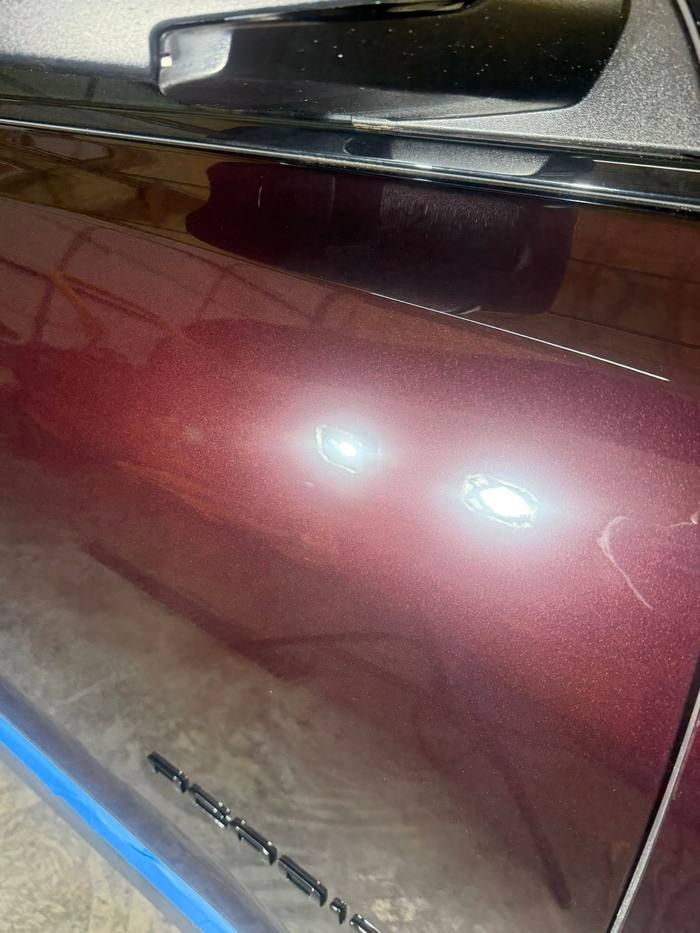
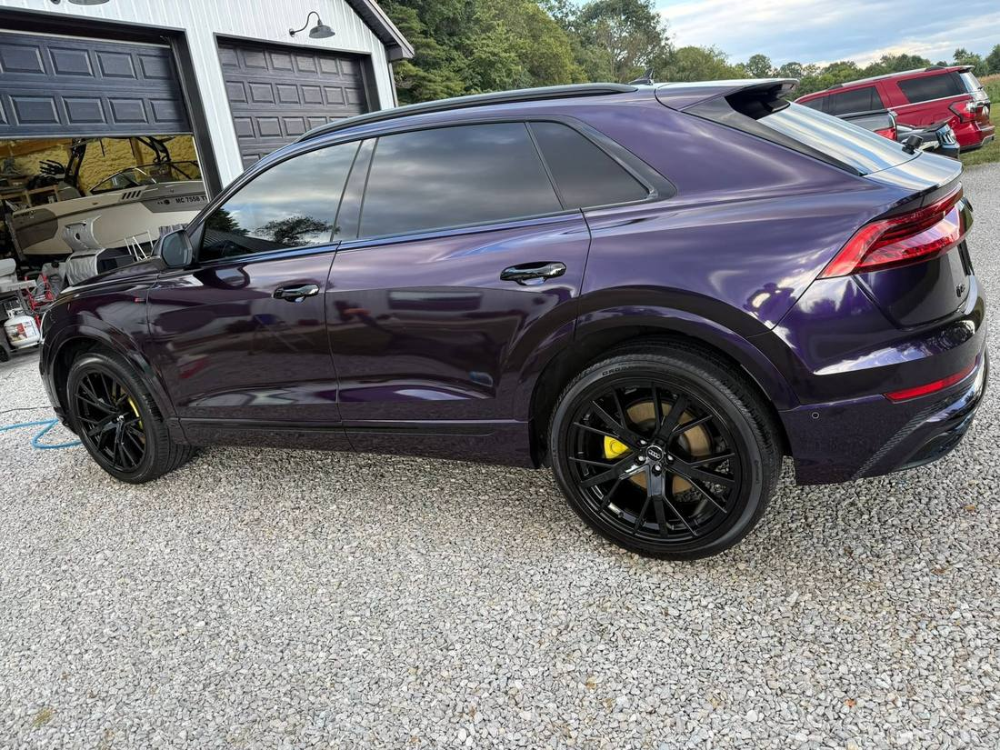
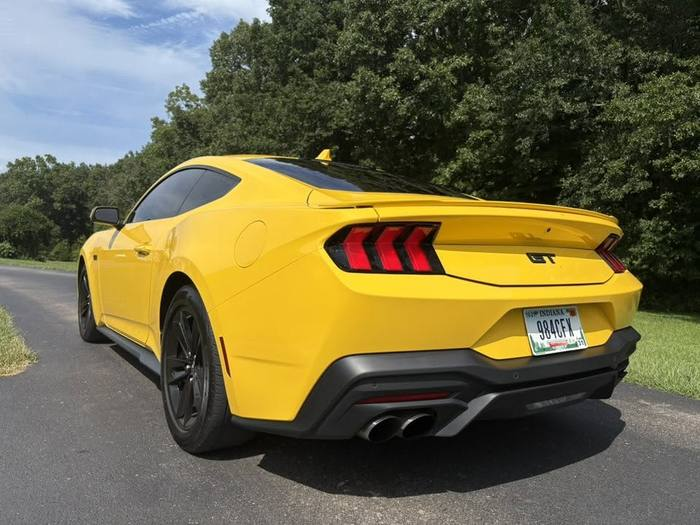

Services
Every vehicle is different, so every job is quoted for what it actually needs. Corrective work is the specialty. Everything below is available in the shop or as mobile service at your place.
The Specialty
Scratches, swirl marks, water etching, and oxidation live in the clear coat. Correction removes them by machine polishing the panel in stages until the defect is gone and the depth of the paint comes back. It is the difference between hiding damage and fixing it.
Deep scratches that reach the primer or metal may need touch-up paint before polishing. We will tell you honestly what correction can and cannot fix during the quote.
Get a Correction Quote

Protection
A ceramic coating bonds to the paint and gives it a hard, glossy layer that resists UV, chemicals, and grime for years instead of weeks. Water beads off, road film rinses away, and washes get easier. Logan is a certified DuraSlic installer, approved to sell, install, and maintain the full DuraSlic product line.
Inside
Seats, carpet, headliner, door panels, vents, and every seam in between. Cloth gets extracted, leather gets cleaned and conditioned, and the whole cabin comes back smelling and feeling right. Kid messes, work trucks, and daily drivers welcome.


Outside
A careful hand wash, not a gas station tunnel. Wheels, tires, trim, and glass get individual attention, and the paint is finished with a wax that adds gloss and short-term protection. A great maintenance option between corrections.
Send a photo of the problem spot with your request and we will tell you straight what will fix it.
Get a Free Quote